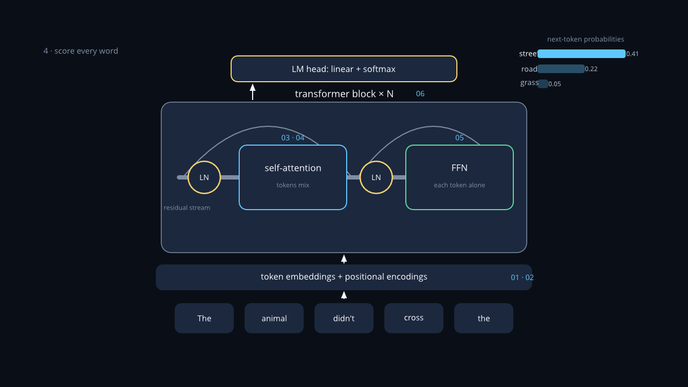
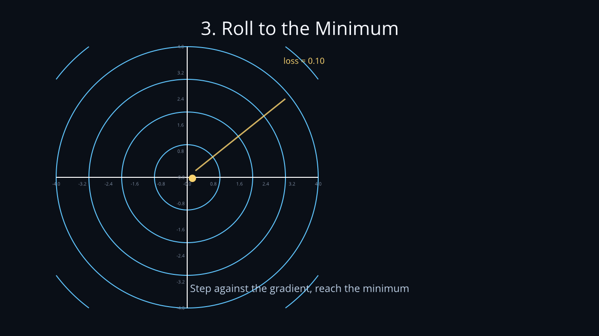
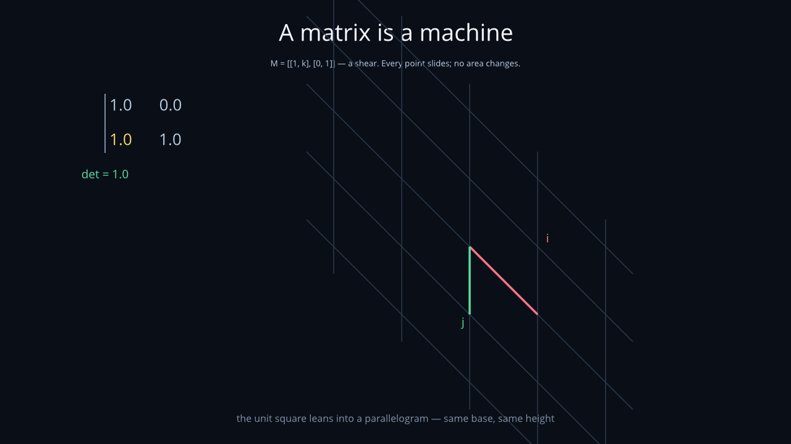
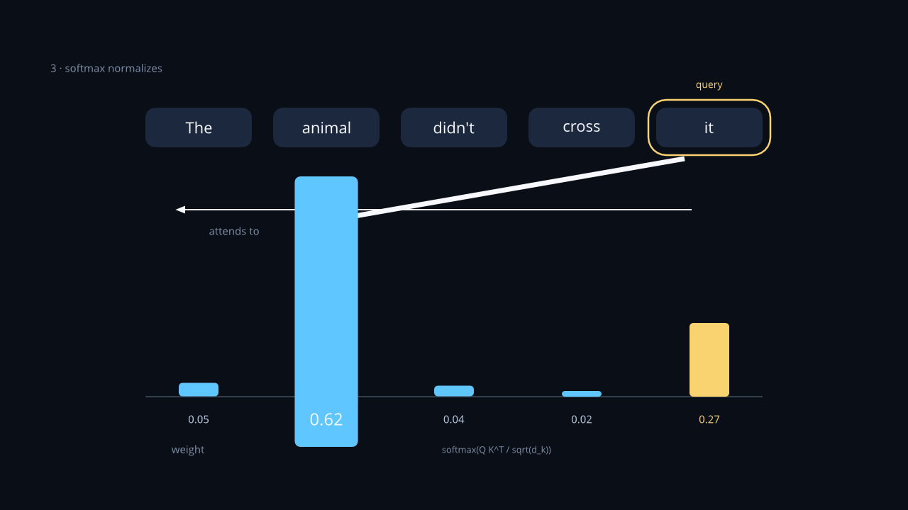
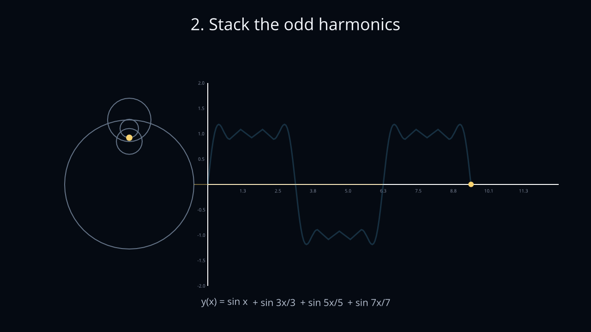
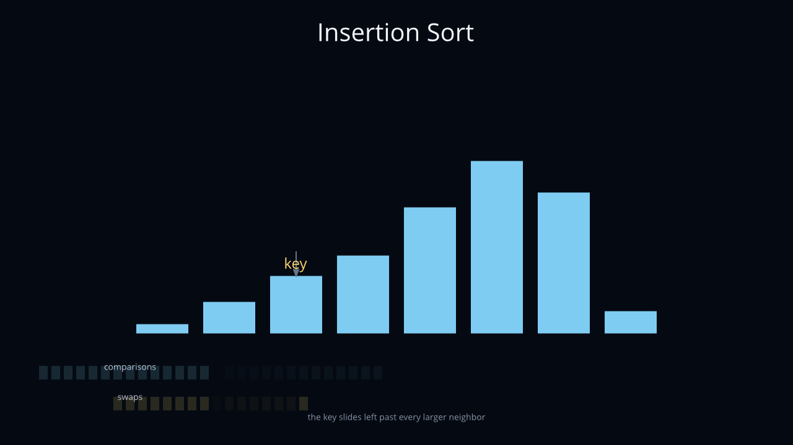

Animatix · demos
Each demo below is a self-contained explainer whose every figure is a declarative scene file — nothing here is a video. Pick one; the engine compiles it in your browser as you read.

Walkthrough · 7 scenes · one engine The Transformer Architecture, Animated The machine behind every language model, built up piece by piece — tokens, positions, attention, heads, the feed-forward block, the stack. Picture-first prose; every figure compiles live as you scroll, and hovering a figure pauses it for study. Start reading →
Walkthrough · 4 scenes · one file Rolling Downhill How machines learn, one picture at a time: the loss surface, the direction against the gradient, a ball that rolls to the minimum, and the step size that decides whether it ever arrives. Start reading →
Walkthrough · 3 scenes · one file A Matrix Is a Machine Linear algebra you can watch: a shear with nothing keyframed, a rotation you read off the columns, and the determinant collapsing the plane through zero — then flipping it. Start reading →
Scene collection Seven scenes, one engine The walkthrough's figures on their own — entrances, morphs, attention bars, plots — each playable right on the page, each with its.amx source one click away.
Open the gallery →

Walkthrough · 5 scenes · one file Circles That Draw a Square Wave A Fourier series as spinning dials: one circle traces a sine, four build a square. The wave re-forms through live function transitions as each harmonic turns amber in the equation. Start reading →
Walkthrough · 3 scenes · one timeline function Sorting, Staged Insertion sort performed by eight bars, directed entirely by one build-time function — every comparison lights a tick, every swap moves two bars, and the bill is stated at the end. Start reading →